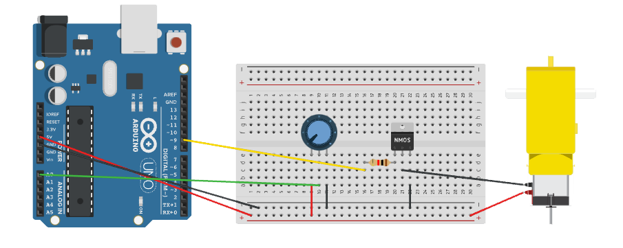
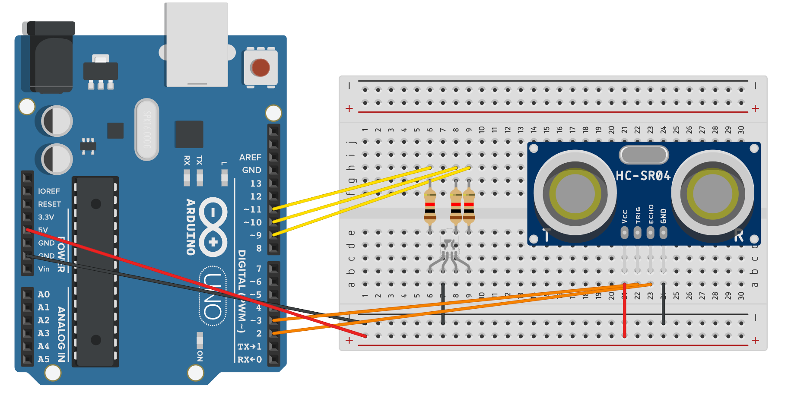

Welcome to my PS70 portfolio! Here you will find weekly progress of my digital fabrication journey.
Transistors can be used to to control the flow of a high-current circuit from a low-current source. For this circuit, I used a IRL214 N-Channel MOSFET transistor and a potentiometer to control the speed of a motor.
I attached a motor to the collector (or drain) of the transistor. Most motors require more current than the Arduino can supply, so you can add a separate power supply. In my case, it wasn't necessary to add another power supply. However, I did notice that the transistor + potentiometer combination enabled me to control the speed of the motor a lot more smoothly than if I just used the potentiometer on its own.

const int transistorPin = 9; // connected to the base of the transistor
void setup() {
// set the transistor pin as output:
pinMode(transistorPin, OUTPUT);
}
void loop() {
// read the potentiometer:
int sensorValue = analogRead(A0);
// map the sensor value to a range from 0 - 255:
int outputValue = map(sensorValue, 0, 1023, 0, 255);
// use that to control the transistor:
analogWrite(transistorPin, outputValue);
}
For the main assignment, I programmed a microcontroller so the RGB LED starts off in an OFF state. When you bring an object within 4-8cm of the ultrasonic sensor, the LED turns ON into a magenta colour. When you bring the object within 0-4cm of the sensor, the LED turns into a green colour.

#define echoPin 2 // attach pin D2 Arduino to pin Echo of HC-SR04
#define trigPin 3 //attach pin D3 Arduino to pin Trig of HC-SR04
int red_light_pin= 11;
int green_light_pin = 10;
int blue_light_pin = 9;
long duration; // variable for the duration of sound wave travel
int distance; // variable for the distance measurement
void setup() {
pinMode(red_light_pin, OUTPUT);
pinMode(green_light_pin, OUTPUT);
pinMode(blue_light_pin, OUTPUT);
pinMode(trigPin, OUTPUT); // Sets the trigPin as an OUTPUT
pinMode(echoPin, INPUT); // Sets the echoPin as an INPUT
Serial.begin(9600); // // Serial Communication is starting with 9600 of baudrate speed
}
void loop() {
// Clears the trigPin condition
digitalWrite(trigPin, LOW);
delayMicroseconds(2);
// Sets the trigPin HIGH (ACTIVE) for 10 microseconds
digitalWrite(trigPin, HIGH);
delayMicroseconds(10);
digitalWrite(trigPin, LOW);
// Reads the echoPin, returns the sound wave travel time in microseconds
duration = pulseIn(echoPin, HIGH);
// Calculating the distance
distance = duration * 0.034 / 2; // Speed of sound wave divided by 2 (go and back)
// Displays the distance on the Serial Monitor
Serial.print("Distance: ");
Serial.print(distance);
Serial.println(" cm");
if (distance >= 8) {
RGB_color(0, 0, 0);// off
}
else if (distance >=4 && distance <8) {
RGB_color(100, 0, 100); // magenta
}
else if (distance <4) {
RGB_color(0, 250, 0); // green
}
}
void RGB_color(int red_light_value, int green_light_value, int blue_light_value)
{
analogWrite(red_light_pin, red_light_value);
analogWrite(green_light_pin, green_light_value);
analogWrite(blue_light_pin, blue_light_value);
}
Since the LED only turned on when an object was within a specific distance of the ultrasonic sensor, it is not on a fixed clock. As you can see in the code, the RGB values for the magenta-coloured light are 100, 0, 100. So, when I connected the red and blue data pins of the LED to the oscilloscope, the signal showed an increase in voltage when the LED turned magenta. When I connected the green data pin of the LED, there was no increase in voltage when the LED turned magenta.
Conversely, the RGB values for the green-coloured light are 0, 250, 0. So, when I connected the red and blue data pins of the LED to the oscilloscope, the signal didn't change when the LED turned green. When I connected the green data pin of the LED, there was an increase in voltage of almost 5V when the LED turned magenta.
When my hand was further than 8cm away from the ultrasonic, the LED was off so the signal stayed at 0V.